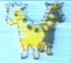

Unused items
Unused map locations | Early English promotional Pokémon names | Eternal Flower Floette | Bird type | Unused music | Unused encounter system (Yellow) | Unused Bulbasaur slot machine symbol | Unused Shadow Pokémon | Cacophony | Unused Japanese list strings (Generation I) | Unused items | Unused Pokémon data | Unused and redundant Egg moves
See also:
S.S. Anne Ship Truck
| This article is incomplete. Please feel free to add any missing information about the subject. It is missing: {{{1}}}. |
This article is a summary page for different variations of a glitches, etc. when talked about as a whole.
|
This article is outdated
| |

|
Feel free to update it. Reason given: Needs unused items from Generation V and onward |
Some parts of this article have not yet been fully reviewed by a member of this wiki's staff or QC team.
| |
|  | Data from the Internet can be inaccurate or false, and it is easy to misremember information. For this reason there is more likely to be incorrect information in this article. This template will be removed once the information is peer-reviewed and tested by a staff or QC member. |
This page is about unused items, in the Pokémon games. For unintended items, see glitch items.
Within the Pokémon games numerous valid items exist, which for some reason, cannot be obtained through normal gameplay in the final release.
Some items have been used in previous generations, such as the Scanner in Pokémon FireRed, Pokémon LeafGreen originating from Pokémon Ruby, Sapphire and Emerald, while other items are completely unused, such as the two ????? items from Generation I, and the Lock Capsule in Generation IV and Generation V.
Contents
Unused items in Generation I
Generation I has a few valid unused items.
- ????? (hex:07): This item will act like the Pokémon had used the field move Surf. For this reason, it is sometimes referred to as the 'Surfboard', even though what this item was meant to be, if anything is unknown.
- ????? (hex:2C): A completely unusable item.
- Coin (hex:3B): These items will stack but cannot be used (attempting to use it will bring up Professor Oak's unusable message) or stored into a Coin Case. Coins can be sold at a PokéMart for 5 Pokédollars per coin. If hacked into a PokéMart listing they are sold for 10 Pokédollars each.
- False PP Up (hex:32): For unknown reasons, there are two PP Up items stored in the game, 32 and 4F. 32 is a fake PP Up which cannot be used (attempting to use it will bring up Professor Oak's unusable message). It can, however, be sold at a PokéMart for 4900 Pokédollars or purchased for 9800 Pokédollars if hacked into a PokéMart listing. The real PP Up has no value and can only be purchased/sold for 0 Pokédollars.
Note that badges exist as items with the BoulderBadge and the CascadeBadge acting like Bait and Rocks from the Safari Zone, respectively and the other badges seemingly having no use.
Techncical Machines (TMs) 51-55 also appear in the game and act like HMs 01 through to 05, respectively, but it is not confirmed whether they are valid.
5. Safari Balls in the item pack: Item data for the Safari Ball exists within the game series occupying a hexadecimal identifier of 08 (8), regardless of the fact that Safari Balls can only be used within the Safari Zone and the fact that these items cannot usually be used directly from the player's bag but rather from the 'THROW BALL' option of the Safari Zone battle system itself.
Unused items in Generation II
Generation II featured many more items, meaning that there are less free item slots in Pokémon Gold, Pokémon Silver and Pokémon Crystal.
1. Teru-Sama (x29): Teru-Sama, are placeholder items with simply the description "?" (it is unconfirmed if this description is valid). Teru-Sama are known in the Japanese versions as Kabichuu (Japanese: カビチュウ). These items have index numbers in between valid items. They are placeholders with simply the description "?" (it is unconfirmed if this description is valid).
Four of the Teru-Samas became items in Pokémon Crystal. These items are the Clear Bell (hex:46), the GS Ball (hex:73), the Blue Card (hex:74) and the Egg Ticket (hex:81). None of the Teru-Samas are usable by default.
At least some of the Teru-Samas may have been real items at one point in the game's development. There are three Teru-Samas with unique effects when they are hacked to have a use option. These are the Teru-Samas with index numbers of hex:06, hex:38 and hex:BE, but the effect of Teru-Sama hex:BE is not valid and using it causes nothing to happen.
Hex:06 functions like a faulty version of the Town Map from Generation I, while hex:38 functions almost like the Poké Flute, but it will not awaken the Snorlax near Vermilion City and the Poké Flute sound doesn't play if the player doesn't have a sleeping Pokémon in the party or uses the item with a sleeping Pokémon in the party within a battle.
Teru-Samas can be sold for 19660 Pokédollars at a PokéMart.
2. False TM04 (hex:C3): There is a false TM04 with the index number hex:C3, directly following the real TM04 by 1. It is stored in the items pocket instead of the key items pocket and has no use option. It has the description "Attacks 5 turns with rising power."; which is the same as the real TM04, Rollout. It can be sold for 19660 Pokédollars.
3. False TM28 (hex:DC): Like the false TM04, the false TM28's index number directly follows the real TM28 by 1, is stored in the items pocket, and has the description of the actual TM28, "1st turn: Burrow 2nd turn: Attack". It can be sold for 19660 Pokédollars.
3. Park Balls as item data (hex:B1): Similarly to the Safari Ball in other generations; although the Park Ball can normally only be used temporarily in the Bug-Catching Contest and cannot be forced into the bag, item data for the Park Ball and a description can be viewed from the player's bag through the use of a cheating device.
Unused items in Generation III
Generation III included many more unused items. It is notable that many of these appear to be ported and slightly edited versions of items from older games, such as the Scanner in Pokémon Firered and Leafgreen, which is based off the actual item which can be found in the Abandoned Ship in Pokémon Ruby and Sapphire. These exist because in theory Game Freak tend to use the older game engines to design the newer Pokémon games, leaving older items in the game code. These items could also exist for technical reason, for the unlikely occasion that the player manages to transfer a key item from one Generation III series to another.
Various games
- ????????: The error handler ???????? ('octomark') is used in the third generation of Pokémon games for invalid items. All(?) of these items have the description '?????' and usually have no 'use' option.
- Safari Ball: The Safari Ball, although normally never obtainable within the Bag remains as its own item within Pokémon Ruby and Sapphire and later all of the main RPG Pokémon games. The description for the Safari Ball in Pokémon FireRed and LeafGreen actually describes the appearance of the Safari Ball, probably because of the fact that these games tended to give more descriptive text about items than in Pokémon Ruby and Sapphire. Other games use descriptions which only indicate that this type of Poké Ball ca only be used in the Safari Zone.
- Enigma Berry: In the third generation of Pokémon games, the Enigma Berry exists as a placeholder for the item identifiers occupying those which should correspond to the bonus berries obtainable via the Pokémon Battle e cards. If the Pokémon Battle e cards were not scanned in to the game, the relevant berry is defined as an Enigma Berry instead. Unlike in Generation IV, the Enigma Berry in the third generation of the Pokémon games has no use and it is unobtainable without the use of a cheating device, as the e-Reader only Berries cannot be traded. In the fourth generation of the Pokémon games, the Enigma Berry is obtainable legitimately, by either migrating a Pokémon holding an e-Reader only to Pal Park[citation needed], or by purchasing one in Pokémon Battle Revolution.
Pokémon FireRed and LeafGreen
List of unused items which were only obtainable in Pokémon Ruby and Sapphire
Many items from Pokémon Ruby and Sapphire exist within Pokémon FireRed and LeafGreen, but are no longer obtainable and most of these items, except for HM08, the Acro Bike and Mach Bike do not have any use in these games.
These presumably exist within the game coding because theoretically Pokémon FireRed and LeafGreen were developed from Pokémon Ruby and Sapphire's original game engine. All of the following are Key Items, because Pokémon can be traded from Pokémon Ruby and Sapphire with other items such as the Fluffy Tail.
- HM08 (fully functional; can be used to teach Dive)
- Scanner (no longer functional)
- Acro Bike (now acts like a normal Bicycle)
- Mach Bike (now acts like a normal Bicycle)
- Go-Goggles (no longer functional)
- Basement Key (no longer functional)
- Blue Orb (no longer functional)
- Red Orb (no longer functional)
- Claw Fossil (no longer functional)
- Eon Ticket (usability unknown)
- Root Fossil (no longer functional)
- Contest Pass (no longer functional)
- Devon Goods (no longer functional)
- Devon Scope (no longer functional)
- Letter (no longer functional)
- Magma Emblem (no longer functional)
- Meteorite (no longer functional)
- Pokéblock Case (no longer functional)
- Rm. 1 Key (no longer functional)
- Rm. 2 Key (no longer functional)
- Rm. 3 Key (no longer functional)
- Rm. 4 Key (no longer functional)
- Rm. 5 Key (no longer functional)
- Rm. 6 Key (no longer functional)
- Soot Sack (no longer functional)
- Storage Key (no longer functional)
- Wailmer Pail (no longer functional)
Pokémon Emerald
List of unused items which were only obtainable in Pokémon FireRed and LeafGreen
Many items from Pokémon FireRed and LeafGreen exist within the coding of Pokémon Emerald, but are no longer obtainable and all of these items appear to no longer have any use. All of the following are Key Items, because Pokémon can be traded from Pokémon FireRed and LeafGreen with other items such as the Pokédoll.
- Berry Pouch (no longer functional)
- Bicycle (no longer functional)
- Bike Voucher (no longer functional)
- Card Key (no longer functional)
- Dome Fossil (no longer functional)
- Fame Checker (no longer functional)
- Gold Teeth (no longer functional)
- Helix Fossil (no longer functional)
- Lift Key (no longer functional)
- Oak's Parcel (no longer functional)
- Old Amber (no longer functional)
- Poké Flute (no longer functional)
- Rainbow Pass (no longer functional)
- Ruby (no longer functional)
- Sapphire (no longer functional)
- Secret Key (no longer functional)
- Silph Scope (no longer functional)
- Tea (no longer functional)
- Teachy TV (no longer functional)
- TM Case (no longer functional)
- Town Map (no longer functional; was replaced with a Pokénav option)
- Tri-Pass (no longer functional)
- VS Seeker (no longer functional)
Unused items in Generation IV
The fourth generation of Pokémon games contain a significant amount of unobtainable items, especially after the release of Pokémon HeartGold and SoulSilver as previous items such as Oak's Letter were usable within Pokémon Diamond, Pokémon Pearl and Pokémon Platinum but are unusable within Pokémon HeartGold and SoulSilver partly due to the fact that Sinnoh is cannot be visited in the game.
Like Generation III, these items probably exist because of Pokémon HeartGold and SoulSilver being developed based from the older games.
There are also a significant amount of items which are never obtainable as actual items within the player's bag, but are mentioned by other NPCs such as the Red Chain in Pokémon Diamond and Pearl.
Various games
- Cherish Ball: Although in Generation IV, V and VI it has been common for Nintendo to distribute many event or gift Pokémon in a Cherish Ball through a Pokémon Event or Mystery Gift the item itself has never been distributed on its own, or as an item held by a Pokémon. As a result, the item is unobtainable within the player's bag without the use of a cheating device. The ball has the description "A quite rare Poké Ball that has been specially crafted to commemorate an occasion of some sort." in Generations IV and V, and if used, it has the capture rate of an ordinary Poké Ball.
- Park Ball: Similarly to the Safari Ball, although the Park Ball is normally only usable in the Pal Park battle mode, item data does exist for if the player was to use a cheating device to acquire the item in his or her bag. Like a Master Ball, its capture rate is 255x, hence the chance a player would capture a Pokémon using this ball is always 100%. Its description is "A special Poké Ball for the Pal Park."
- Safari Ball: As with previous generations, item data also exists for the Safari Ball in Generation IV even though it is only usable as part of an altered battle mode in the Great Marsh, and later the Safari Zone in Johto. Its capture rate is the same as a Great Ball. Interestingly, its description is that it is a ball which can only be used in the Great Marsh; even though this is no longer the case in Pokémon HeartGold and SoulSilver.
- Loot Sack: Item data for the Loot Sack exists within Pokémon Diamond and Pearl, Pokémon Platinum and later Pokémon HeartGold and SoulSilver regardless of the fact that the Underground used a separate interface instead to allow the player to manage the items he or she obtains. The Underground was also removed in Pokémon HeartGold and SoulSilver, supporting the interpretation that these games were designed from the previous game engine.
- Rule Book: Item data for a Rule Book, which would contain rules on guidelines on how to trade Pokémon via the Global Trading System exists within the coding of the main handheld Generation IV games regardless of the fact that no mentioned guidelines were implemented into the final game, though information on trading guidelines are mentioned in the game's instruction booklets.
- Seal Bag: Item data for a Seal Bag exists within the main handheld Generation IV games regardless of the fact that another interface was used, allowing players to store Seals in the PC instead. According to the game, the Seal Bag would hold up to 10 seals, however it is no longer useable.
- Magma Stone:The Magma Stone is a mentioned item by Buck in Pokémon Platinum, (although data for the Magma Stone also exists within Pokémon Diamond and Pearl) which would awaken Heatran if left at Stark Mountain. It is usually unobtainable within the player's bag however, as it remains hidden within Stark Mountain and in Pokémon Platinum, it is only temporarily in the possession of Buck until it is later returned. Regardless of this, item data for the Magma Stone exists in the Sinnoh based Generation IV games and later within Pokémon HeartGold and SoulSilver.
- Red Chain: The Red Chain is a mentioned item by Team Galactic within Pokémon Diamond, Pokémon Pearl and Pokémon Platinum which was used to extract the gems from the bodies of Uxie, Mespirit and Azelf and combine them as a chain in order to control either Dialga or Palkia, as by capturing them in a Pokéball this would restrict their power. The item itself however, cannot be obtained in the player's bag within normal gameplay. Despite the fact that its item data was never used in these games, the Red Chain exists as item data again within Pokémon HeartGold and SoulSilver. Its description in the player's bag is "A mythical chain that is said to link the legendary Pokémon that created the Sinnoh region. It is said that the Red Chain summons Dialga and Palkia when it is put together."
- Point Card: The Point Card was only given out in Pokémon Diamond and Pearl and is no longer obtainable in later games, even though it exists in other Generation IV games. The ability to view how many battle points the player had was added as an extension to the VS Recorder.
Pokémon HeartGold and SoulSilver
- Lock Capsule: Item data exists within Pokémon HeartGold and SoulSilver for a Lock Capsule. This item is ultimately unused. According to its in-game description, it is "A sturdy Capsule that can only be opened with a special key." Unused dialogue within the game include phrases such as "The Lock Capsule was delivered safely" and "The Lock Capsule is held in the strictest safekeeping." [1], suggesting that the item was planned to be transferable to Pokémon Black and White. The Lock Capsule returns in Pokémon Black and White, where it apparently has an event where it can be opened by an NPC named "Mr Lock", revealing a TM95 - Bark Out. Mr Lock states that the item was enclosed to protect it from Team Rocket.
- Photo Album: Item data exists within Pokémon HeartGold and SoulSilver for the Photo Album, regardless of the fact that photographs are normally stored in the player's PC instead. As an item in the bag, the Photo Album serves no use.
- SlowpokeTail: Interestingly, the SlowpokeTail is no longer obtainable in Pokémon HeartGold and SoulSilver as it previously was in Pokémon Gold and Silver. Regardless of this, item data for the SlowpokeTail exists. Like in the previous game, the SlowpokeTail serves no use, but can be sold for 4900 Pokédollars. Incidentally, its description does not directly refer to Slowpoke and rather states that it is "A very tasty tail of something."
List of unused items which were only obtainable in Pokémon Diamond, Pokémon Pearl and Pokémon Platinum
Many items which were only obtainable within the previous Generation IV handheld Pokémon games remain within the coding of Pokémon HeartGold and SoulSilver. All of these items also appear to no longer have any use. These presumably exist within the game coding because in theory, Pokémon HeartGold and SoulSilver was developed from an upgraded version of Pokémon Platinum's original game engine. All of the following items are Key Items, because Pokémon can be traded from Pokémon Platinum with other items such as Sweet Honey. The only exception to this rule is the Griseous Orb, which detaches itself when a player trades a Giratina holding it. Regardless of this, the Griseous Orb is obtainable in Pokémon HeartGold and SoulSilver from a special Giratina, obtained in the Shinjo Ruins.
- Explorer Kit (usability unknown)
- Pokéradar (usability unknown)
- Seal Case (usability unknown)
- Azure Flute (no longer functional)
- Coupon 1 (no longer functional)
- Coupon 2 (no longer functional)
- Coupon 3 (no longer functional)
- Galactic Key (no longer functional)
- Journal (usability unknown)
- Lunar Wing (no longer functional)
- Member Card (no longer functional)
- Oak's Letter (no longer functional)
- Old Charm (no longer functional)
- Parcel (no longer functional)
- Poffin Case (usability unknown)
- Point Card (functions normally)
- Secret Key (no longer functional)
- Sprayduck (no longer functional)
- Storage Key (no longer functional)
- Suite Key (no longer functional)
- Town Map (replaced with Pokégear's map feature, functionability is unknown)
- Vs. Seeker (no longer functional)
- Works Key (no longer functional)